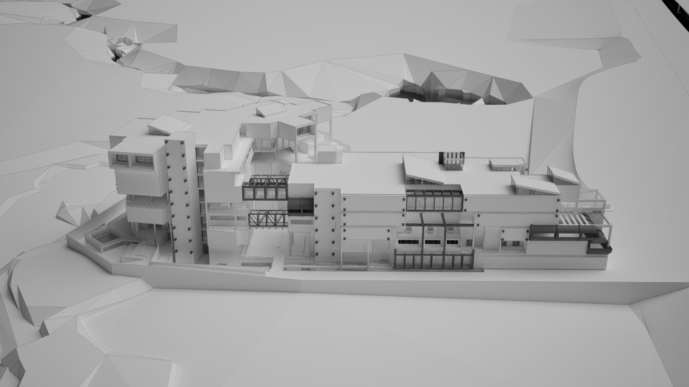

The Architecture of Surgical Forms
A secondary hospital on the River Ravi

A surgical machine has no wasted parts. Every arm, joint and panel is there because it does something. This project asks a hospital to work the same way.
A 250-bed secondary hospital on the contoured bank of the River Ravi, Lahore. The forms of surgical machines were the starting point, but the design is driven by function: departments, flows and services planned as tightly and as clearly as the machines that inspired them.
[site]
The site is at Siddique Pura, beside the River Ravi on the edge of Lahore. The ground is contoured, with alluvial soil over rocky substrata. Around it is a mixed lower-middle and middle class neighbourhood next to a densely built part of the city, with the river, a wooded belt and the road network close by.
Site analysis was done in pairs, and the digital site model was built together with Hassan Ali. The hospital itself is an individual project.
[concept]
The starting point was the surgical machine: the robotic surgical arm, the C-arm scanner, the anaesthesia machine. Each is built around a precise function, with nothing in it that does not work. The project asked whether a hospital could be planned with the same precision.
The machines here are downloaded 3D models, studied rather than designed. Placed side by side, they produced a speculative elevation, a skyline made only of medical equipment. The building that followed does not copy any machine. The aim was the essence of one: tight, efficient planning in which every department sits where it works best.
[the building]
A 250-bed secondary hospital is arranged as a long wing and a stepped tower, connected by bridges. Two lower ground floors are cut into the slope, with six floors above. The lower floors hold the departments that need direct access, such as emergency, outpatients and services. Wards, the operation theatre complex, ICU, maternity and terraces are stacked above.
Each department is planned around its own flow, so patients, staff and services move along separate routes. The section steps down with the ground towards the river.
[3d model]
The final Revit model, without furniture, doors or services. Drag to orbit, scroll or pinch to zoom, right-drag to pan.
[drawings]
Nine levels, from the second lower ground floor to the sixth floor. Drawings are in feet.
[plans]
[sections]
[elevations]
[axonometrics]
[renders]
Clay renders, kept white to show the form, the stepping and the depth of the facades.